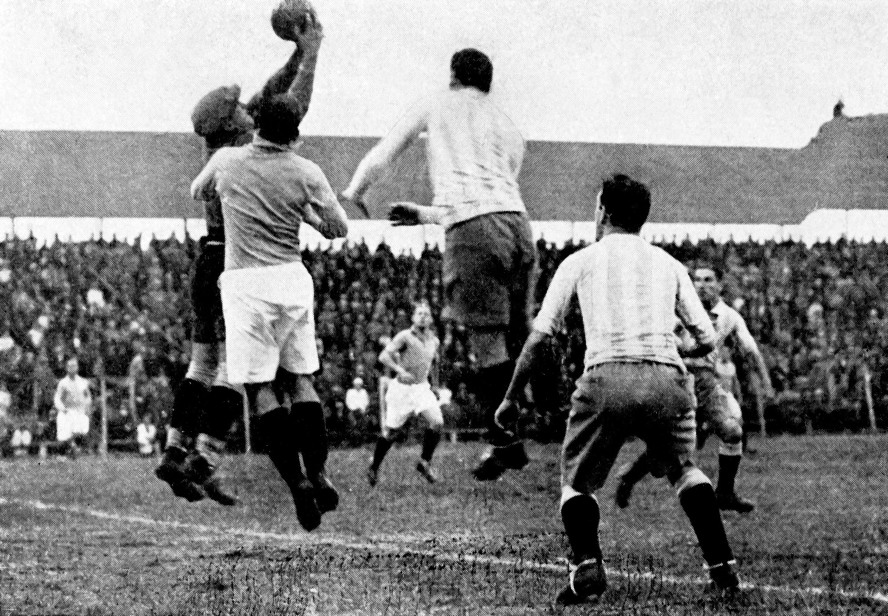

Le football, également connu sous le nom de soccer notamment en Amérique du nord, a une histoire riche et variée qui s'étend sur plusieurs siècles. Le jeu a ses racines dans les civilisations anciennes, où les jeux consistant à taper dans un ballon étaient joués à des fins récréatives et religieuses. Cependant, la version moderne du football que nous connaissons aujourd'hui est née en Angleterre au 19ème siècle.
Au début, le football se jouait avec peu de règles et impliquait souvent de grands groupes de joueurs. Cependant, en 1863, la Football Association (FA) a été formée en Angleterre, qui a normalisé les règles du jeu et a aidé à les diffuser dans tout le pays. Le premier match de football officiel a été joué en 1863 entre deux équipes de 11 joueurs chacune, ce qui est maintenant devenu le format standard du jeu.
Le football a rapidement gagné en popularité dans d'autres parties du monde et des matchs internationaux entre pays ont commencé à avoir lieu au début des années 1900. Le premier match international de football a eu lieu en 1872 entre l'Écosse et l'Angleterre, l'Écosse remportant le match 1-0. En 1904, la Fédération Internationale de Football Association (FIFA) a été formée, qui a contribué à réglementer le jeu au niveau international et a organisé la première Coupe du monde en 1930.
La Coupe du monde est le tournoi le plus prestigieux du football et a lieu tous les quatre ans. Le tournoi réunit les meilleures équipes nationales du monde entier pour concourir pour le titre de champion du monde. Le Brésil est l'équipe la plus titrée de l'histoire de la Coupe du monde, ayant remporté le tournoi un record à cinq reprises. D'autres pays qui ont eu du succès dans le tournoi sont l'Allemagne, l'Italie, l'Argentine et la France.
Outre la Coupe du monde, le football a également vu l'émergence d'autres compétitions majeures, telles que la Ligue des champions de l'UEFA, la Copa Libertadores et la Coupe d'Afrique des Nations, entre autres. Ces tournois offrent aux équipes de clubs et aux équipes nationales la possibilité de s'affronter et de montrer leurs compétences sur la scène mondiale.
Aujourd'hui, le football est le sport le plus populaire au monde, avec des milliards de fans à travers le monde. Il est devenu une partie importante de nombreuses cultures et a même été utilisé comme un outil pour promouvoir le changement social et l'unité. Malgré ses controverses et ses défis, le football reste un sport bien-aimé qui continue d'évoluer et de captiver le public du monde entier.